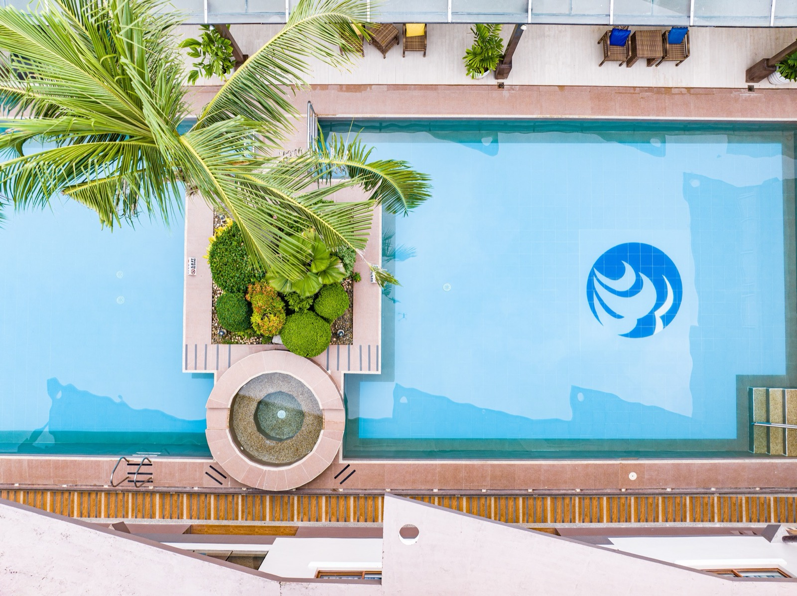
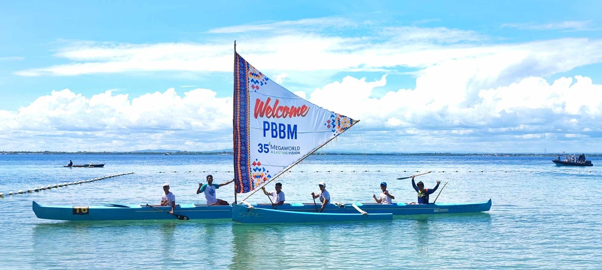
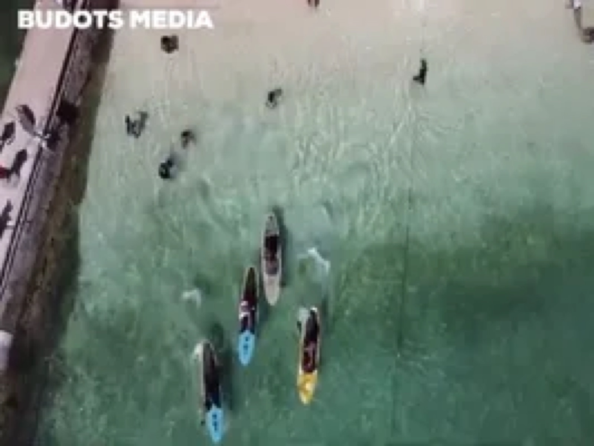
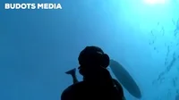
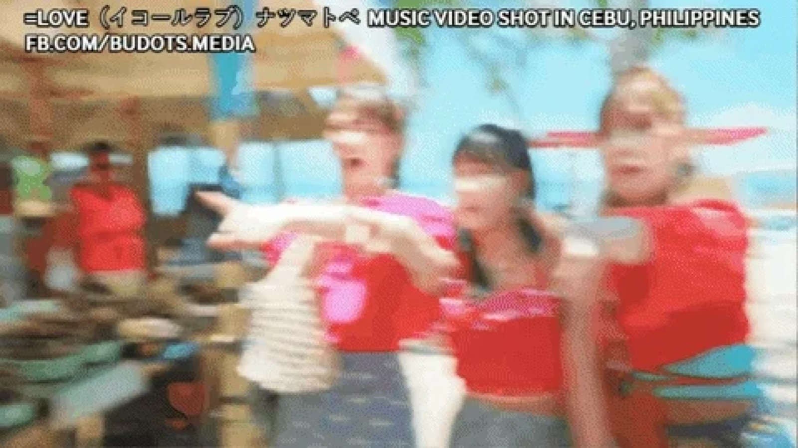

Our Specialities
Over ten years of experience filming in the Philippines — for hotels, events and watersports.
Hotel Marketing. Resort and hotel campaigns across Cebu, Camiguin and beyond — from JPARK Island Resort to Savoy and Belmont at Mactan Newtown.

Events. Product launches, government events and corporate functions — some in collaboration with Green Concepts Cebu.

Watersports. On and under the water — freediving, paddling, surfing, island hopping.


How We Work
Planning & preparation. Working out hardware, crew and other details: weather, drone plans, budget.
Media production. Shooting on set with crew, drones and lights. In some cases we outsource to partner production companies.
Post production. Audio mastering, 3D effects and — since 2023 — a dedicated social-media team that delivers ROI on your videos and makes sure your material reaches its intended audience.
100+ clients · 10+ years · a proven track record in the Philippines and elsewhere.

We also produce for foreign video crews (Japan, Korea), run teams based in Cebu, Palawan and Mindanao (from 2025), and have delivered projects for local government units in over five provinces, bidding via PhilGEPS.
Our Brands & IP
Budots Media Philippines — video production. Our sister brands — Cebu News, Aerial Data Ops and Philippines Travel Company — are presented on the Partners page.
Content mirrored from budotsmediaph.com ("Showcase of products and assets by Budots Media Philippines", archived June 2025) — all files now hosted in this repository.
← Home